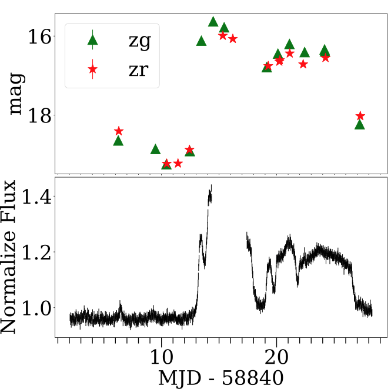
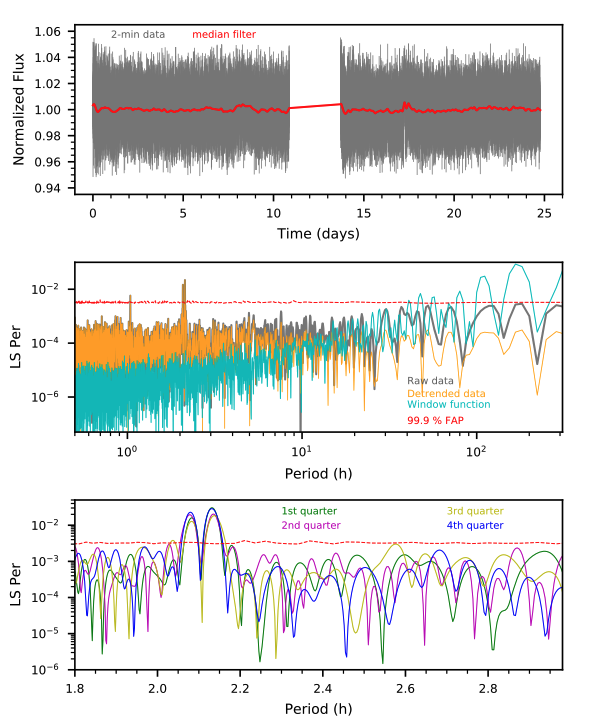

STATUS UPDATE: Sector 38 data is currently being ingested at MAST
Welcome TESS followers to this weeks news bulletin. This week we are looking at three papers from the archive,
TACOS: TESS AM~CVn Outbursts Survey (Marcano et. al., 2021) :
AM Canum Venaticorum (AM CVn) stars are a type of cataclysmic variable (CV) in which a white dwarf accretes hydrogen poor material from a compact companion star. In this paper the authors conduct a systematic study of their outbursts, using 9 TESS AV CVn light curves, to place limits on the models. These 9 objects show both super-outbursts and normal outbursts, but the continuous coverage and high cadence of TESS has allowed the authors to place strict limits on the duration and structure of these outbursts.
The authors have found that in some of the systems enhanced mass transfer is needed to explain the observed light curve of the super-outburst and the re-brightening phase. In other systems the color evolution from simultaneous observations in g and r-bands from ZTF, differ from the previously reported color evolution of the longer period AM CVns, where the enhanced mass transfer is responsible for the super-outburst.
Due to the previous lack of high cadenced data the authors find that the duration of many AM CVn stars may have been overestimated. New durations have now been calculated for six of the systems investigated. Precursors have also been found to be a common feature of super-outbursts in AM CVns, and five of the six super-outburst have these.
The high cadenced 2 and 10 minute TESS data has allowed for the derivation of two new orbital periods, both of which are in good agreement with predictions based on past outbursts.
The unpopular Package: a Data-driven Approach to De-trend TESS Full Frame Image Light Curves (Hattori et al., 2021) :
The TESS mission provides most of its data in the form of full frame images or FFIs. These FFIs contain various systematic effects such as pointing jitter and scattered light from the Earth and Moon. These systematics must be removed from the data before it is used in scientific analysis.
In this paper the authors present an open source Python package called "unpopular", which can remove the systematic trends via the casual pixel model method. The code assumes that the shared flux variations across multiple distant pixels are likely to be systematics. The code then removes the trends by modeling the systematics in a given pixel's light curve as a linear combination of light curves from many other distant pixels.
Overfitting is always an issue in such an analysis, but is prevented here by employing a ridge regression train-and-test framework, where the data points being de-trended are separated from those used to obtain the model coefficients.
Simultaneous fitting with a polynomial model to capture any long term astrophysical trends is also allowed.
To find out more about this code and its application to various astrophysical phenomena, please read the paper.
Detection of photometric variability in the very low-mass binary VHS J1256-1257AB using TESS and Spitzer (Miles-Páez, 2021) :
This paper looks at VHS J1256-1257AB is an equal mass M7.5 binary system with a late L-dwarf companion - VHS J1256-1257 b, forming one of the few young triple systems of ultra-cool dwarfs.
Two-minute TESS data is used with that from Spitzer to examine the optical and infrared light curves of the system. This examination reveals periodical epochs of quasi-sinusoidal modulation, followed by stochastic variability which resembles the beat pattern created by two waves of similar frequencies that interfere with each other.
Applying a two wave model to the TESS data, the authors show that the components of VHS J1256-1257AB rotate with periods of 2.0782 hr and 2.1342 hr, values that are supported by the Spitzer observations. The fluxes of VHS J1256-1257A and B are equal and alternate between states of phase and anti-phase - this explains the observed photometric variability in their combined light.
See this paper for more information about this fascinating system.

Fig. 1: Taken from Marcano et. al., (2021). Light curve from ZTF (top) and TESS (bottom) light curve of PTF1 J0719+4858 from sector 20 at 30-minute cadence. The data from the middle of the plateau phase of the super-outburst is contaminated with background and taken out for clarity. The light curve shows a small outburst before the super-outburst and at least 3 echo outburst of increasing duration and variable brightness after the super-outburst.

Fig. 2: Taken from Miles-Páez (2021). Analysis of the optical data. Top: TESS light curve of VHS J1256-1257AB. Vertical lines denote individual uncertainties, and the red line is a 601-point median filter. The zero time corresponds to MJD 58568.93734. Middle: LS periodogram for the TESS light curve shown in the top panel (gray curve) and after de-trending with a median filter (orange). The window function is also shown (cyan). The authors computed the associated 99.9% FAP (red) from 10,000 light curves generated by data randomization. Bottom: LS periodogram for different chunks of the data. A double peak centered at ∼2.1 hours is present in all the sections of the data.